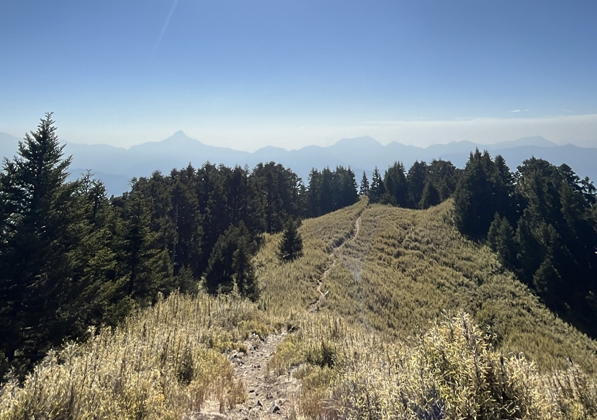
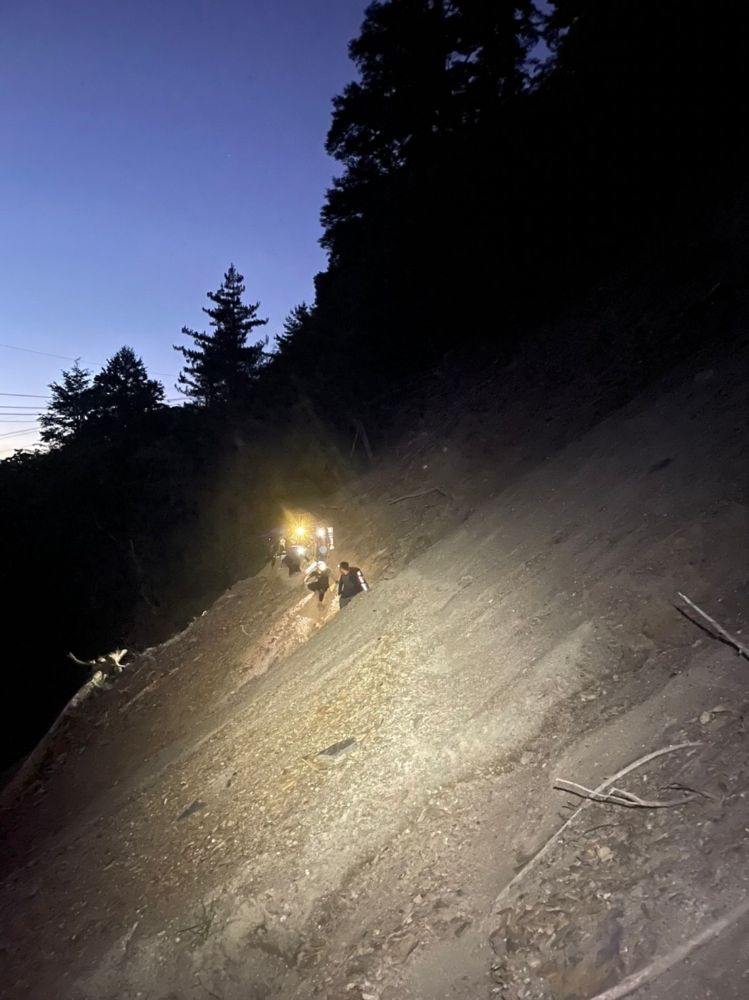
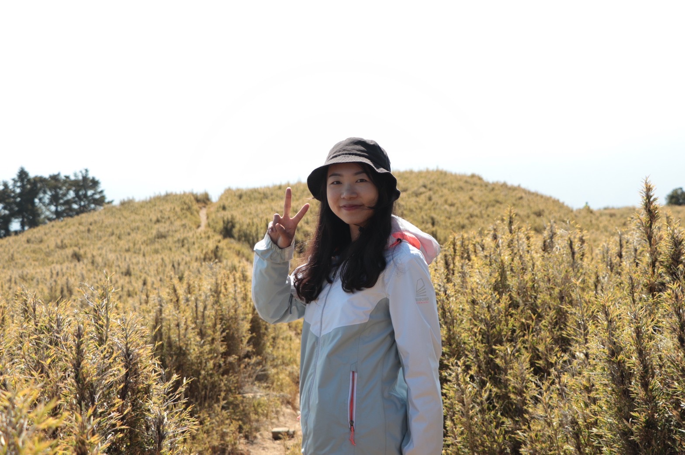

2021-2022-2023
Step by Step: The Thrill and Joy of Hiking

2021-2022-2023
In the winter of 2021, at the invitation of a friend, I embarked on a journey that led to my love for mountain climbing. I started with just a pair of running shoes in my closet, but soon my space was filled with various climbing gear. The process of climbing mountains is not only a physical challenge but also a mental one. In Taiwan, the 100 highest peaks over 3,000 meters above sea level are known as the 'Hundred Peaks List.' This list is a lifelong goal for many Taiwanese hiking enthusiasts.
However, due to Taiwan's variable climate and steep terrain, climbing high mountains often requires hiring professional local drivers for a 4-5 hour drive along treacherous roads just to reach the trailheads. The journey can start in the morning with temperatures around 30 degrees Celsius and extreme humidity, but by evening, the temperature can plummet to just 1 to 5 degrees Celsius. The 'Hundred Peaks List' is notably more challenging than other trails. First, the weather and altitude can easily cause altitude sickness. Second, the terrain is extremely steep, and for hours, it's not just hiking but climbing over rocks. Third, Taiwan's high mountains are undeveloped; there's no internet, and if you lose your way, you won't find traces of previous hikers. Many tragic accidents happen within just two days of getting lost in these mountains. Therefore, 'teamwork' becomes an essential element and one of the reasons I fell in love with mountain climbing.
Inviting friends to join, obtaining mountain permits, buying climbing insurance, and distributing gear all test everyone's organizational and teamwork skills. Those who can cook handle food shopping. The physically stronger team members carry more equipment. Experienced hikers adjust their pace to match the beginners. Someone leads the team, while another stays at the back. Everyone takes a mountain safety course to prepare thoroughly. Sometimes, when I feel like I can't go on, the encouragement and cooperation of my teammates always help the team reach the summit together. The supportive and encouraging atmosphere keeps me climbing one peak after another. Because of my love for climbing, I have made many friends and collaborated with various people to organize activities.




